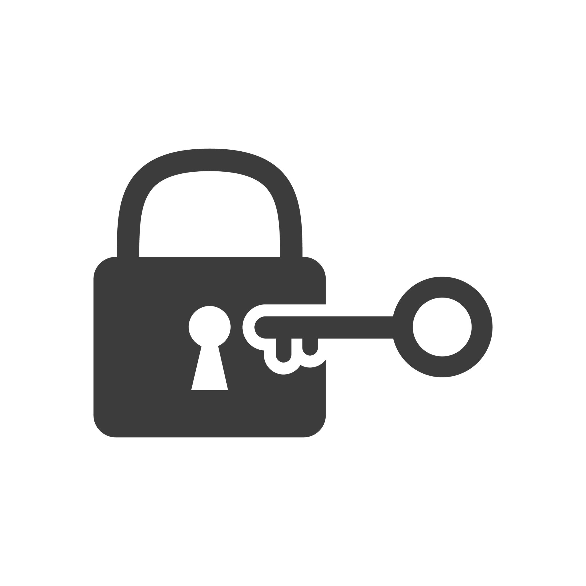

Successfully Authenticated!
This content and all resources are protected by a Reverse Proxy placed in front of Keycloak.
Protected Resources:
- **This HTML Page** (`index.html`)
- **The Stylesheet** (`style.css`)
- **The Image Below** (`protected_image.png`)
- **The Favicon** (`favicon.ico`)
